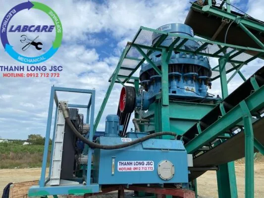
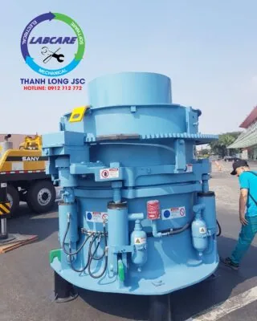
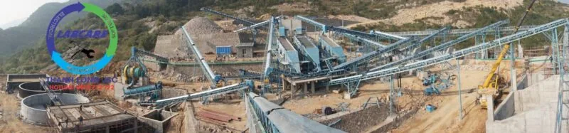
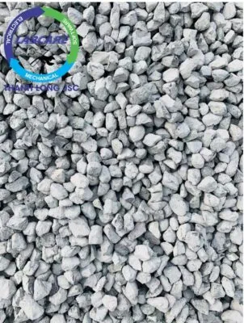
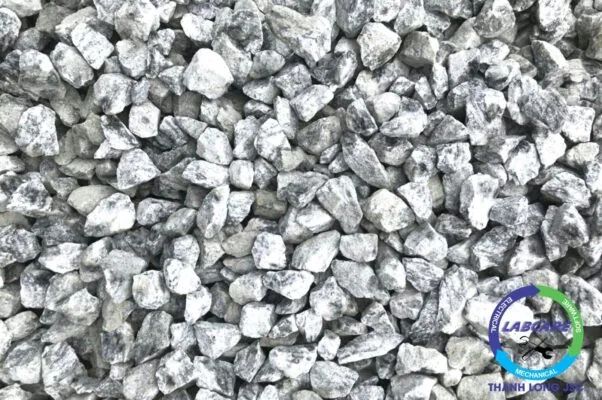
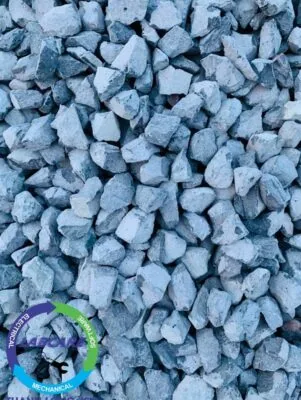
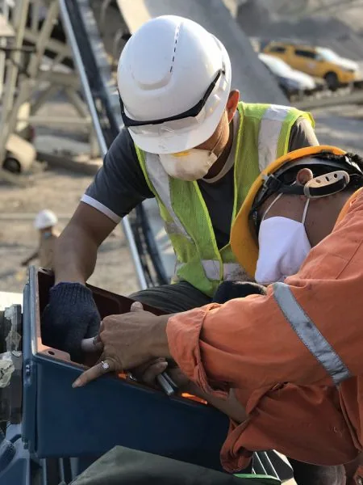

Trước khi tìm hiểu sự cố của máy nghiền côn và cách khắc phục tốt nhất, ta phải hiểu dây chuyền nghiền đá xây dựng là một tổ hợp các thiết bị (kể cả thiết bị hỗ trợ). Các thiết bị này khi vận hành sẽ phối hợp liên tục với nhau, tạo thành một chuỗi đưa đá nguyên khai có kích thước lớn, về kích thước theo yêu cầu phù hợp với lại các yêu cầu về xây dựng của các khách hàng. Và không thể tránh khỏi các sự cố của dây chuyền, chẳng hạn như: sự cố của máy nghiền côn, máy nghiền hàm, máy nghiền cát, sàng rung và các thiết bị liên quan.
Máy nghiền hàm: Là thiết bị đầu tiên trong hệ thống dây chuyền nghiền đá xây dựng. Với cơ cấu đặc biệt, máy có khả năng đưa các viên đá có kích thước lớn ngay khi nổ mìn, ra thành các hạt có kích thước nhỏ hơn.
Qua máy nghiền hàm là máy nghiền côn hoặc máy nghiền phản kích ( máy nghiền búa ngang ). Tùy thuộc vào độ cứng, tính chất vật lý của đá mà chúng ta sẽ lựa chọn các thiết bị sao cho có hiệu quả kinh tế cao nhất. Đây cũng là loại máy quyết định việc tạo ra sản phẩm đẹp hay không đẹp.
Cấu tạo và nguyên lý làm việc của máy nghiền côn

Máy nghiền côn có cấu tạo chính là cặp nón côn động (hay còn gọi là côn trong) và nón côn tĩnh (hay còn gọi là côn trong) quay bởi trục lệch tâm.
Vật liệu nghiền khi được đưa vào buồng nghiền của máy nghiền côn sẽ hoạt động theo nguyên tắc chèn ép và ma sát rất lớn, khi bề mặt nón di động chuyển động tới gần bề mặt nón cố định. Chuyển động trên được thực hiện nhờ chuyển động lắc hay quay tròn của cơ cấu lệch tâm. Khi vật liệu được nghiền với cỡ hạt phù hợp sẽ được xả ra ngoài theo cửa xả liệu phía dưới. Tuy nhiên, nếu vận hành không đúng cách sẽ gặp phải các sự cố của máy nghiền côn trong dây chuyền.
Máy nghiền côn được sử dụng đối với các loại vật liệu nghiền cứng như đá, quặng sắt, quặng đồng, thạch anh, đá Granit. Đối với vật liệu đá cứng chủ yếu tập trung ở miền Trung và miền Nam – Việt Nam. Sản phẩm sau máy nghiền côn có hình dáng tròn rất đẹp. Phù hợp cho việc sản xuất đá xây dựng, ngành khai khoáng nói chung và các ngành công nghiệp sản xuất.
Máy nghiền côn
Máy nghiền côn SCH – SHR – là máy nghiền côn được ứng cho đá cứng và dai. Có sự kết hợp độc đáo giữa tốc độ quay của trục lệch tâm, lực văng, lực nghiền và thiết kế buồng nghiền. Thiết kế buồng nghiền hợp lý, được chứng minh tại thực tế là có công suất cao hơn và chất lượng sản phẩm cuối tuyệt vời trong tất cả các ứng dụng nghiền thứ cấp, nghiền ba giai đoạn và nghiền bốn giai đoạn.
Để đảm bảo an toàn tối đa cho các công nhân vận hành, máy nghiền côn SCH – SHR được thiết kế để bảo trì dễ dàng. Bạn có thể truy cập vào các thành phần chính dễ dàng từ phía trên của máy nghiền côn.
Thông số kỹ thuật

Ưu điểm khác biệt của máy nghiền côn – SRH
- Lực nghiền, năng suất, sản lượng cao hơn so với các loại máy nghiền côn của những hãng khác
- Chất lượng sản phẩm tuyệt đối: cho ra những hạt đồng đều và giảm được tỉ lệ vỡ vụn
- Có thể hoạt động liên tục trong nhiều giờ
- Tính khả dụng và thiết kế mạnh mẽ khả thi
- Tiêu thụ điện năng thấp hơn tới 20% so với các máy nghiền côn khác
- Máy có kết cấu đơn giản, tiện lợi, dễ dàng khi sử dụng và bảo dưỡng
- Tự động hóa máy nghiền qua bộ vi xử lý thông minh IC khách hàng có thể kiểm soát bảo trì, chỉnh sửa cài đặt, theo dõi sản xuất và trích xuất dữ liệu.
- Dễ dàng chuyển đổi, thực hiện được dễ dàng hơn
- Sử dụng an toàn.

Những sự cố của máy nghiền côn thường gặp và cách sửa chữa khi sử dụng dây chuyền máy nghiền đá
Có những sự cố của máy nghiền côn là do những nguyên nhân tổng hợp của những khâu liên quan trong hệ thống, cho nên khi có sự cố phải kiểm tra xác minh cẩn thận. Tìm ra nguyên nhân đích thực, sau đó đưa ra cách xử lý linh hoạt, thỏa đáng, tránh sự phán đoán sai lầm, xử lý sai lầm, như vậy mới tránh khỏi để sự cố càng nghiêm trọng hơn.
-
Nhiệt độ dầu của hệ thống bôi trơn giảm tốc quá cao.
* Nguyên nhân:
– Do làm mát kém.
– Do quá trình sinh nhiệt trong giảm tốc quá lớn.
– Do chất lượng dầu suy giảm.
* Xử lý:
– Kiểm tra lại hệ thống cấp nước làm mát, điều chỉnh tăng lượng nước.
– Xử lý nhiệt độ nước làm mát.
– Vệ sinh hệ thống gia nhiệt ( nếu cần)
– Kiểm tra lại giảm tốc, tìm nguyên nhân phát sinh nhiệt cao ( có thể do bôi trơn kém, vòng bi bị hỏng….) và khắc phục.
-
Lưu lượng dầu bôi trơn không đủ.
*Nguyên nhân:
– Bộ bơm dầu bị hỏng.
– Có sự rò rỉ trên đường ống.
– Bộ lọc dầu bị tắc.
– Nhiệt độ dầu quá thấp.
– Mức dầu trong bể thấp.
– Van dầu mở không hết.
* Xử lý:
– Kiểm tra bôi trơn dầu, khắc phục các hư hỏng.
– Kiểm tra khắc phục sự rò rỉ của các đường ống.
– Vệ sinh các bộ lọc dầu ( nếu cần ).
– Gia nhiệt cho dầu ( nếu nhiệt độ dầu thấp ).
– Mở các van dầu cho đúng.
-
Áp suất dầu trên đường ống cao áp của hệ thống bôi trơn giảm tốc không đủ.
* Nguyên nhân:
– Có sự rò rỉ trên đường ống.
– Cụm dầu bơm bị hỏng.
– Mức dầu trong bể tháp
* Xử lý:
– Kiểm tra khắc phục sự rò rỉ của đường ống.
– Kiểm tra khắc phục cụm bơm dầu.
– Bổ sung đủ dầu.
-
Áp suất căng rulô không đạt:
* Nguyên nhân:
– Có sự rò rỉ trên đường ống.
– Cụm dầu bơm bị hỏng.
– Van xả áp đặt không đúng.
– Bộ lọc dầu bị tắc.
– Bộ làm kín xi lanh bị hỏng.
* Xử lý:
– Kiểm tra khắc phục sự rò rỉ của đường ống.
– Kiểm tra khắc phục sự hư hỏng của cụm bơm.
– Kiển tra đặt lại giá trị cho van xả áp ( phải do người có truyên môn cao thực hiện ).
– Vệ sinh bộ lọc dầu. ( nếu cần )
– Sửa chữa thay thế xi lanh.
-
Van cấp liệu quay bị kẹt:
* Nguyên nhân:
– Van bị kẹt cơ khí do : ổ đỡ trục van bị hỏng, đá, kim loại kẹt vào cánh van.
– Vật liệu cấp quá nhiều.
– Động cơ bị hỏng không khởi động được.
* Xử lý:
– Kiểm tra khắc phục nguyên nhân kẹt cơ khí.
– Kiểm tra động cơ và hệ thống khớp nối.
– Kiểm tra phần liệu cấp.
Quy trình bảo dưỡng của dây chuyền máy nghiền đá để tránh các sự cố của máy nghiền côn
Chính vì tính chất công việc hoạt động như vậy nên máy nghiền đá vốn được thiết kế bằng các loại vật liệu có độ cứng cao, khả năng chịu lực và chịu va đập cực tốt. Tuy nhiên, dù thế nào thì máy móc nào trong quá trình hoạt động cũng sẽ phát sinh ra lỗi sự cố ở máy nghiền côn.
Ban đầu chúng có thể chỉ là các lỗi nhỏ không đáng chú ý, thậm chí bị bỏ qua. Nhưng càng về lâu dài, máy sẽ hoạt động không còn ổn định và việc bảo dưỡng lúc này là rất cần thiết, để giúp tăng tuổi thọ sử dụng cũng như hạn chế được những trục trặc xảy ra, khiến bạn phải tốn kém tiền sửa chữa hay mất an toàn lao động. Mỗi chi tiết máy có một tuổi thọ và khả năng hoạt động khác nhau, vì thế việc bảo dưỡng nên diễn ra định kỳ là tốt nhất.
Khi máy nghiền đá hoạt động, chúng sinh ra một lực rung rất lớn, tác động lên các khe hở của những mối hàn ghép có sẵn từ đầu, và ngày càng mở rộng các mối cũng như gây ảnh hưởng lên các chi tiết khác.
Quy trình bảo dưỡng máy nghiền đá được thực hiện cụ thể như sau:
- Trước mỗi lần vận hành máy, hãy kiểm tra tổng quan một lượt toàn bộ hệ thống máy truyền động để xem có điều gì bất thường hay không.
- Sau khi kết thúc vận hành, hãy kiểm tra lại một lần nữa trước khi bàn giao để chắc chắn rằng không có vấn đề gì phát sinh trong ngày hôm đó. Đồng thời, công nhân cũng nên làm vệ sinh máy sạch sẽ sau mỗi ngày hoạt động, tránh việc để các nguyên liệu và chất bẩn làm hao mòn chi tiết máy và ảnh hưởng đến năng suất của những ngày hôm sau.
- Mọi ổ trục trong máy luôn phải được chú ý bôi trơn thường xuyên.
- Nếu bạn không có nhu cầu dùng đến máy nghiền đã trong một thời gian dài, hãy vệ sinh máy sạch sẽ trước khi lưu kho, tra dầu đầy đủ rồi che đậy cẩn thận, đặt máy tại những kho chứa thoáng, sạch, không bị ẩm thấp, mốc nấm…
Sau khi hoàn thành các thao tác trên, bạn sẽ sử dụng loại máy xây dựng này một cách hợp lý và hiệu quả hơn. Ít gặp sự cố của máy nghiền côn

Các sản phẩm từ dây chuyền máy nghiền đá



Với kinh nghiệm nhiều năm trong lĩnh vực cung cấp máy nghiền đá và máy nghiền cát nhân tạo, Thanh Long JSC nhận sửa chữa sự cố của máy nghiền côn, máy nghiền hàm, máy nghiền cát, sàng rung và các thiết bị liên quan đảm bảo đáp ứng mọi yêu cầu khách hàng. Cam kết uy tín, chất lượng đảm bảo, giá thành cạnh tranh.
Thanh Long JSC đã và đang cung cấp lắp đặt cho thị trường Việt Nam hơn 45 dây chuyền máy nghiền đá và máy nghiền cát nhân tạo, có công suất 50 khối/h đến 750 khối/h, chất lượng, hiệu quả, tính ổn định cao.

Công ty THANH LONG JSC chuyên cung cấp dây chuyền máy nghiền đá, dây chuyền máy nghiền cát nhân tạo, máy rửa cát, máy tách cát mịn, máy nghiền côn, máy kẹp hàm, băng tải, sàng rung, máy nghiền cát nhân tạo, vật tư trạm nghiền với giá tốt nhất.
Để biết thêm thông tin chi tiết hơn về các loại dây chuyền sản xuất máy nghiền cát và đá, từ thủ công đến thủ công chuyên nghiệp. Hãy liên hệ ngay với chúng tôi qua SĐT: 0912-712-772 để được báo giá miễn phí, tư vấn các giải pháp đầu tư tiết kiệm và nâng cao hiệu quả trong công việc.